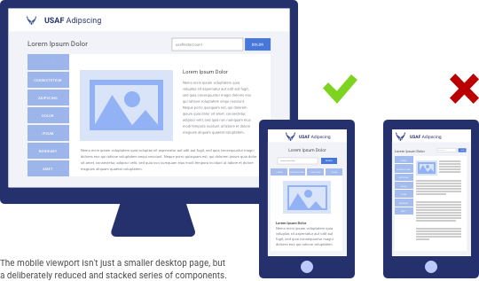
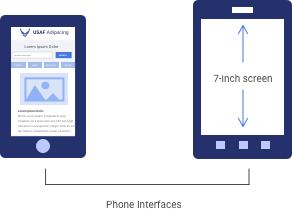
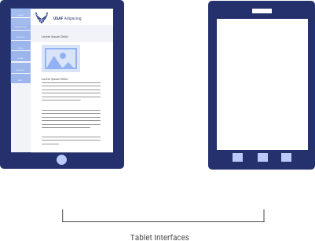
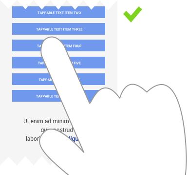
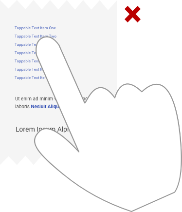

4.12 Key Mobile Standards
“Mobile first” is a design mantra that helps remind us that an ever-increasing percentage of platform access is via mobile device (both phone and tablet). In some cases, mobile devices make up the majority of access. So while we can’t yet dismiss the importance of desktop devices, it’s a best practice to remember that our users first reach for the computers in their pockets.
Most visual design principles are universal, and applicable across devices. The elements of type and color and imagery employ the same best practices. But two key factors (and many smaller ones) require slightly different design thinking, and a real consideration of user experience.

When translating desktop designs to mobile, don’t just miniaturize it – consider how the device and context should influence changes.
Other mobile best practices include:
Remember that a mobile device isn’t just a phone. Scalability across devices, more specifically between a phone and tablet, is a common challenge among designers. While the phone and tablet share many similarities, users use tablets, phones, phablets (not small enough to be a phone, not big enough to be a tablet) very differently.
 
Mobile interfaces less than 7 inches width should be treated as a phone. Layout should be aligned across these devices as much as possible, and should also leverage native platform guidelines and capabilities when possible.
Mobile phone designs should include only necessary information. The phone is a convenient way to consume information on the go. Airmen use a phone to complete quick actions while they are not at their workspace, capture data in the field, view content, and perhaps return to look later on a larger device.
Mobile interfaces greater 7 inches width should be treated as a tablet. Layout should be aligned across these devices as much as possible; they do not need to align to phone interfaces.
Tablet designs should look and feel like desktop web, but function like a phone (tap / swipe / hold gestures, etc.). Tablets are more likely to be held in landscape view – approximating the desktop viewport – and in this way, many users consider the tablet a hybrid device.
Unlike the pixel-precise cursor on desktop, mobile interactions rely on human fingers of vastly different sizes. The rule of thumb (!) is that any clickable element should be 48px x 48px (accounting for 2x or greater design if necessary) to accommodate the average fingertip. This hit area should also have adequate padding around it; immediately adjacent clickable elements are not recommended.
 
While most USAF platforms are web-based application viewed within the mobile device browser, native OS design (mobile apps) unlocks the potential of an integrated device.
Smart phones and tablets have a lot to offer: touch, voice, pressure, location tracking, accelerometer, notifications, etc. You are designing around the device, the platform, the user experience. How can these device features be utilized in products? How can the mobile device benefit users beyond the screen interface in front of them?
When designing for native platforms, however, consistently refer to the native OS design guidelines. These constantly evolve with new version releases and system redesigns, so it’s always good practice to stay on top of these guidelines and refresh your memory and knowledge often.
Apple’s Human Interface Guidelines https://developer.apple.com/ios/human-interface-guidelines/
Google’s Material Design Guidelines https://material.io/guidelines/
Mobile Design Principles https://medium.com/blueprint-by-intuit/native-mobile-app-design-overall-principles-and-common-patterns-26edee8ced10
https://uxplanet.org/7-rules-for-mobile-ui-button-design-e9cf2ea54556